由于Spring MVC是Spring框架中的一个模块，所以Spring MVC与Spring之间不存在整合的问题，只要引入相应的JAR包就可以直接使用。
因此，SSM框架的整合只涉及 Spring与MyBatis的整合 + Spring MVC与MyBatis的整合。
Spring与MyBatis的整合在Mybatis部分已介绍，思路：通过Spring实例化Bean，然后调用实例对象的查询方法来执行MyBatis映射文件中的SQL语句，如果能够正确查询出数据库中的数据，就认为Spring与MyBatis框架整合成功。
加入Spring MVC整合，思路：可以通过前台页面来执行查询方法，并且查询出的数据能够在页面中正确显示，即可认为三大框架整合成功。
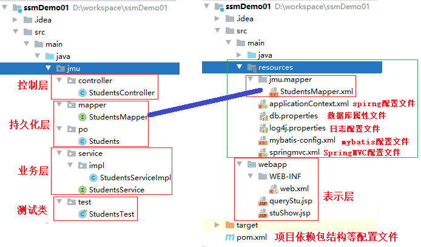
(1)持久层：该层由若干持久化类（实体类）组成；
(2)数据访问层（DAO层）：该层由若干DAO接口和MyBatis映射文件组成。接口名称统一以DAO结尾，并且MyBatis的映射文件名称要与接口的名称相同；
(3)业务逻辑层（Service层）：该层由若干Service接口和实现类（Impl）组成；
(4)Web表现层：该层主要包括Spring
MVC中的Controller类和JSP页面。
Controller的实现类的任务：
★接收请求，接收参数，验证参数，处理请求
★封装参数，调用业务方法，返回处理结果数据。
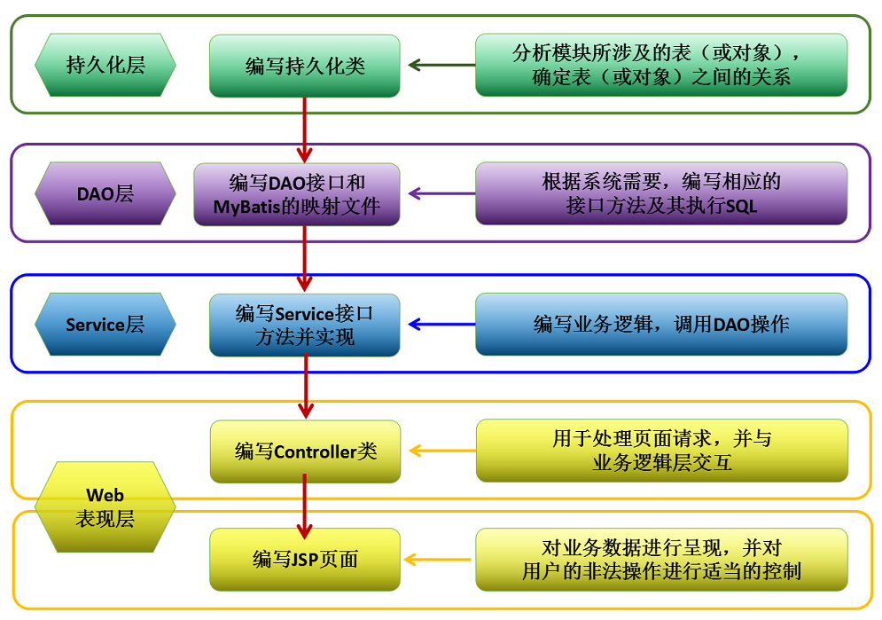
(1.1) 在IntelliJ中，创建Maven项目，选择web模板，项目名ssmDemo01。
(1.2) 完善Web项目结构，在src/main目录下创建java文件夹(设置为Source)
在src/main目录下创建resources文件夹(设置为resources)。
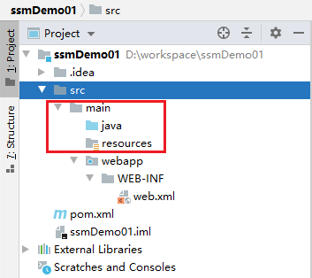
(1.3) 为ssmDemo01项目添加tomcat服务器。
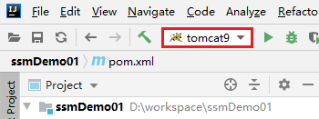
(1.4) 配置 pom.xml文件，导入SSM所需要的依赖。可从模板中复制。
(2.1) 在src/main/resources路径下创建数据库常量配置文件 db.properties，日志信息文件 log4j.properties。可从模板中复制。
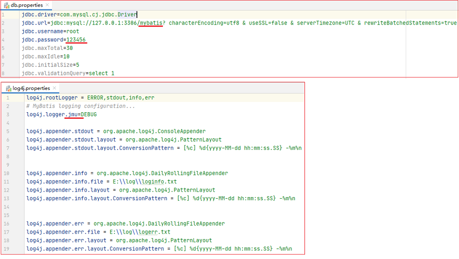
(2.2) 在src/main/resources路径下创建MyBatis的配置文件 mybatis-config.xml。 在MyBatis的配置文件中不需要再配置数据源信息以及mapper接口文件扫描器, 转交到Spring的配置文件中配置。
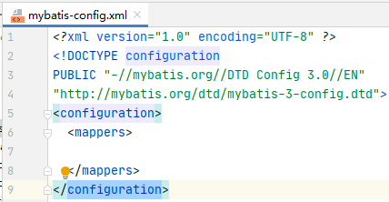
(2.3) 在src/main/resources路径下创建Spring的配置文件 applicationContext.xml。
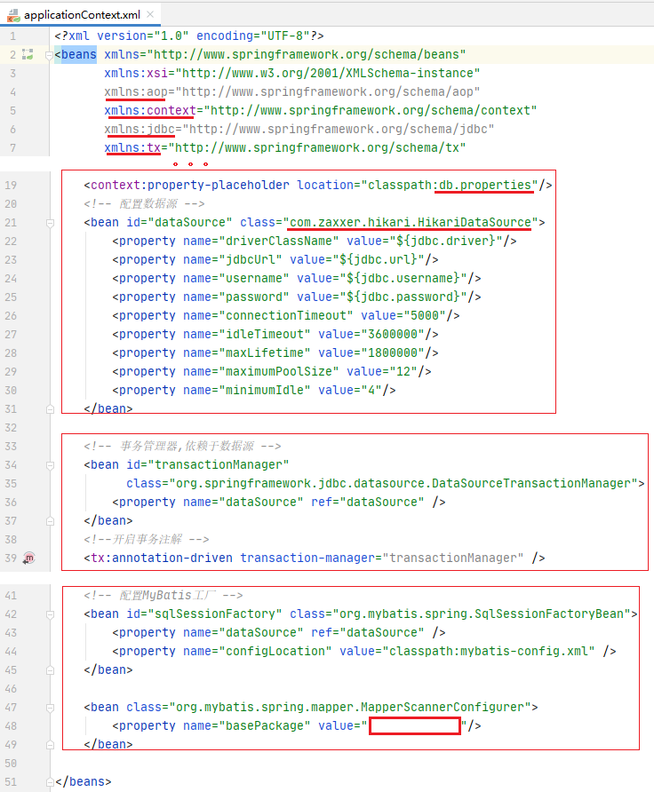
(2.4) 在src/main/resources路径下创建Spring MVC的配置文件 springmvc.xml。主要配置了用于扫描 @Controller注解的包扫描器、注解驱动器以及视图解析器。可从模板中复制。
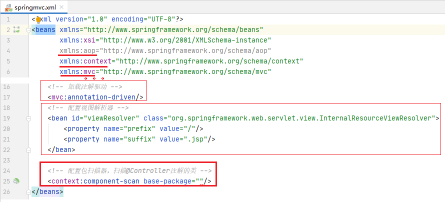
(2.5) 打开src/main/webapp/WEB-INF/路径下的web.xml文件， 配置了Spring的文件监听器、编码过滤器以及Spring MVC的前端控制器。从模板中完全复制。
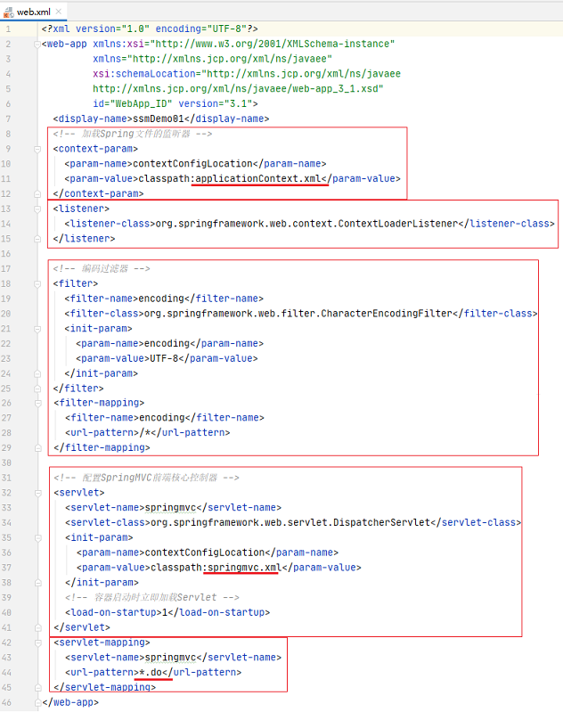
(3.1)在src/main/java目录下， 创建一个jmu.po包，并在包中创建持久化类Students。
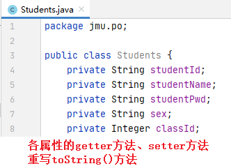
(3.2) 在src/main/java目录下，创建一个jmu.mapper包， 并在包中创建:接口文件StudentsMapper.java。
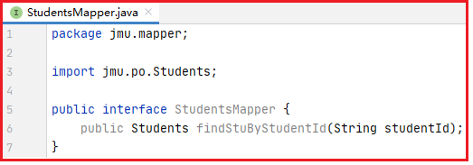
(3.3) 在src/main/resources目录下，创建一个jmu.mapper包， 并在包中创建对应的映射文件StudentsMapper.xml,该映射文件的可从模板中复制修改。
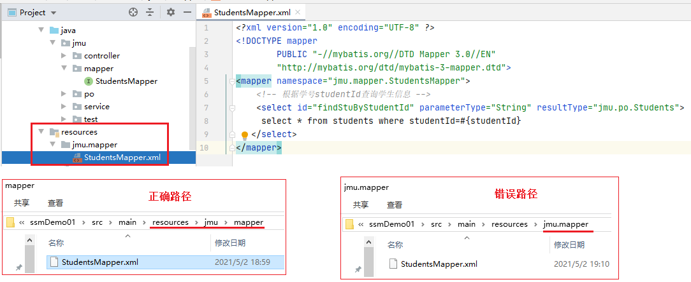
在applicationContext.xml中使用包扫描的形式加入了扫描包 jmu.mapper下的所有接口及映射文件。
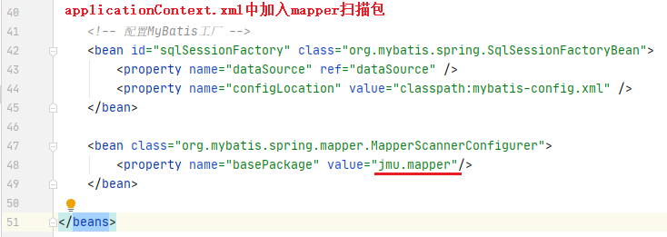
(3.4) 在src/main/java目录下，创建一个jmu.service包， 并在包中创建接口文件StudentsService.java。
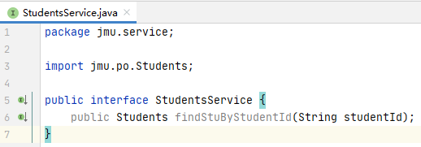
(3.5) 在src/main/java目录下，创建一个 jmu.service.impl包， 并在包中创建StudentsService接口的实现类StudentsServiceImpl。
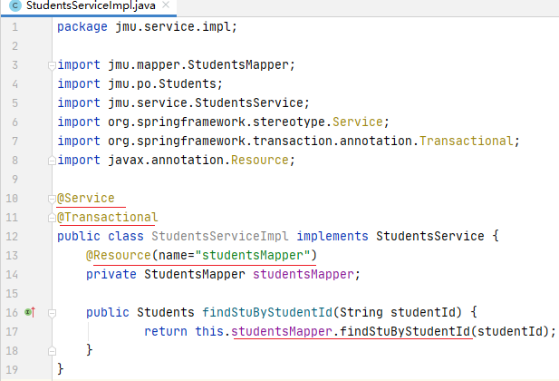
在applicationContext.xml中使用包扫描的形式加入了扫描包 jmu.service包。
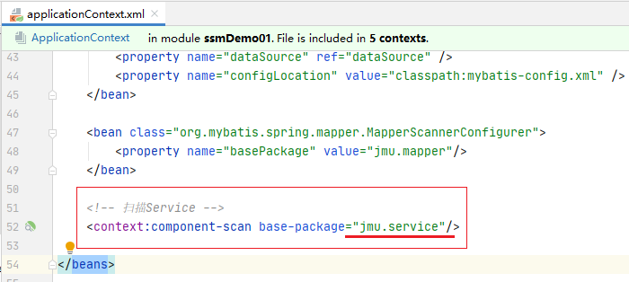
(3.6) 在src/main/java目录下，创建一个 jmu.controller包，并在包中创建用于处理页面请求的控制器类 StudentsController。
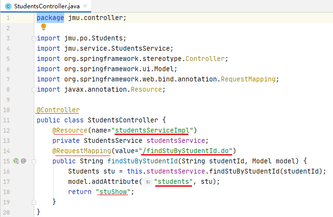
(3.7) 在src/main/java目录下，创建一个jmu.test包，并在包中创建测试类 StudentsTest.java，编写按学号查找学生的测试方法。
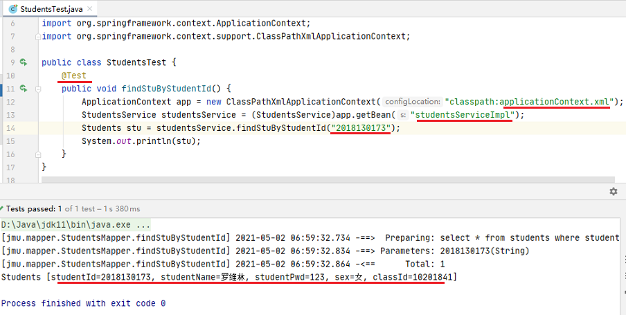
(3.8) 在src/main/webapp目录下，创建按学号查询学生页面queryStu.jsp，页面提交到/findStuByStudentId.do。
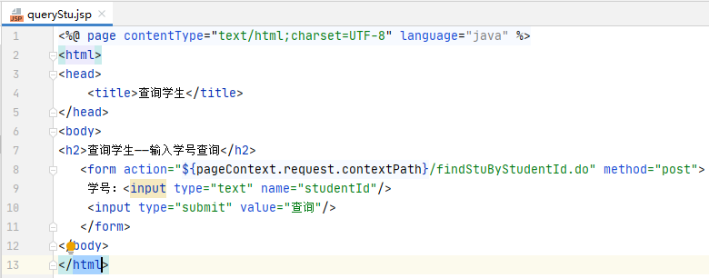
在src/main/webapp目录下， 创建显示学生信息的页面stuShow.jsp。
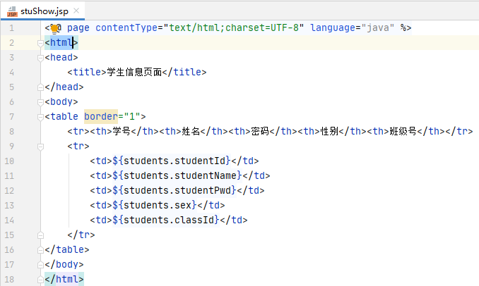
(3.9) 启动服务器，在浏览器访问地址：http://localhost:8080/ssmDemo01/queryStu.jsp。
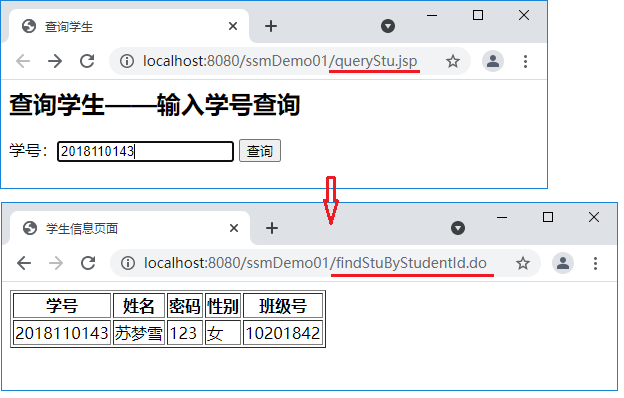